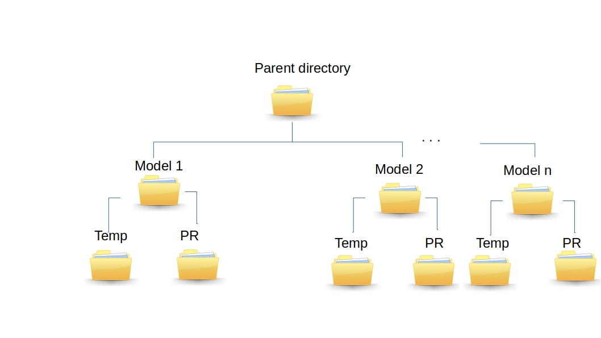
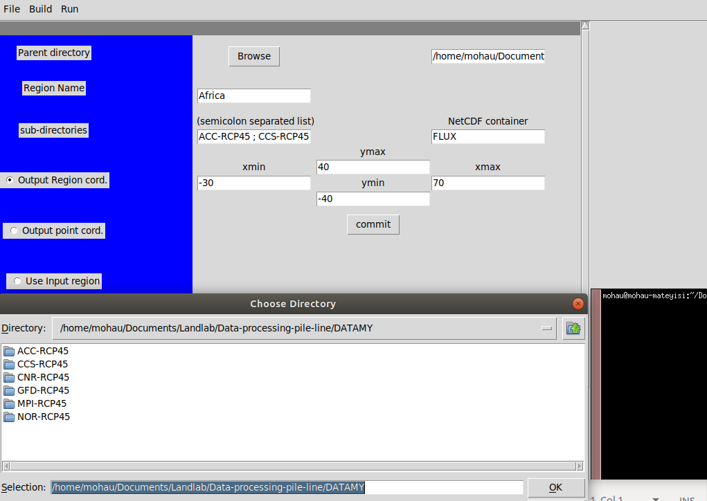
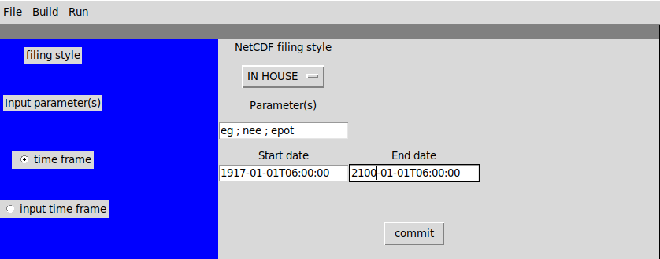
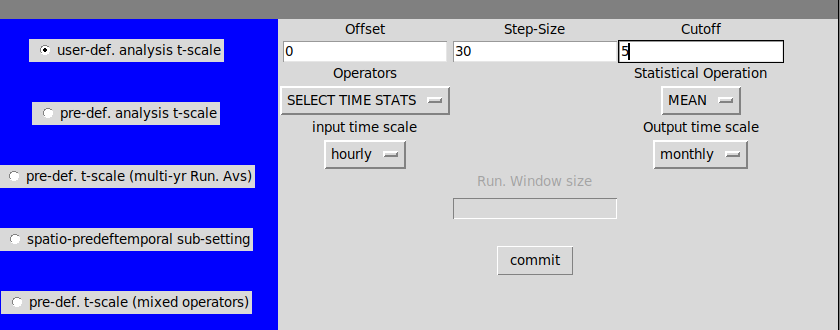
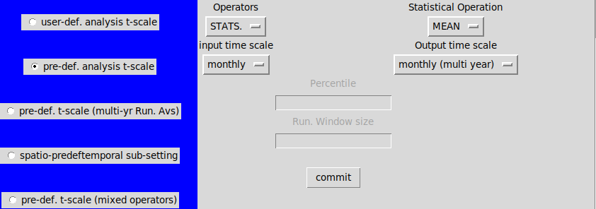
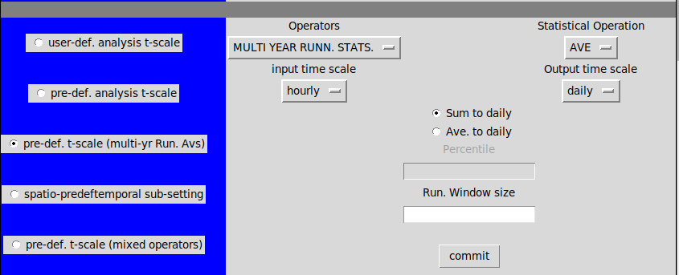
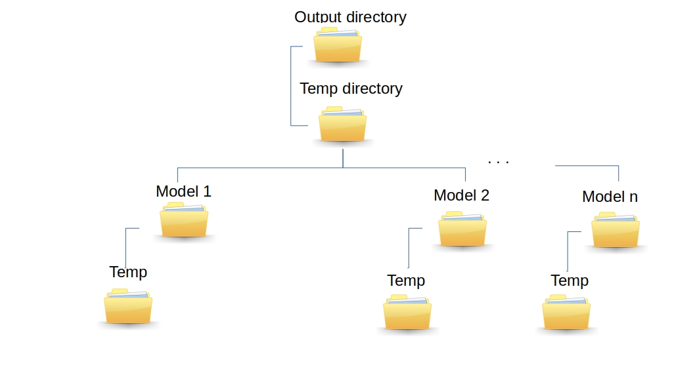

User documentation¶
In this section, a brief explanation of the compound operators and a link to the consituent CDO sub-operators is presented. For a detailed description about CDO operators, the reader is adviced to refer to the CDO user manual. Here we explain key feature of the compound operators and presenting CDO categories that fall under each compound operator. we also demostrate how the pipeline’s graphical user interface can be used to semi-automate the analysis based on a selected few examples. After familiarizing with the recommended input and output file structure for multiple file processing, the reader will also get a feel of various options available for semi-automation of spatial-data analysis. This is presented under the Compound operators options section.
Build from sources¶
Here we explain how to setup the pipeline.
User inputs¶
Input and ouput file structure¶
The input filing convension for the pipeline follows a three level structure in which the top level is a parent folder, the mid-level is dedicate to the ensemble members and the the bottom level for each member host data containing directories.
Let us consider the case when we have to calculated annual means given 10 years worth of temperature and precipitation hourly data from the ensemble members: Model 1, Model 2, Model 3 up to Model n. Then according to the above filing convension, the input NetCDF files containing the timeseries for temperature and precipiation is filed as shown in fig.1
Fig.1
In an instance where the NetCDF files are such that each contain multiple parameters, in which case both temerature and precipitation are in one NetCDF file, there will be only one directory at level 3 which contain the NetCDFs, instead of two.
Note
The multi-model analysis semi-automation works only if there are no data gaps for the specified period and region for each of the models.
Next, we demonstrate how to use the pipeline’s graphical user interface to key in the input and output spatio-temporal specications as well as the input options under each compound operator. The GUI also capture meta data for the labeling of outout files hence enabling reproducibility of the data analysis steps.
Output spatial extent¶
Fig.2.
The left blue panel present a categorical description of the user inputs on the right. On the first pane, we have for example:
- Parent directory: by selecting the ‘browse’ button a navigation window for choosing the parent directory opens up. In Fig.1 the top directory is ‘DATAMY’, the level two directories are ACC-RCP45, CCS-RCP45, CNR-RCP45, GFD-RCP45, MPI-RCP45 and NOR-RCP45. Each of the level two directories contain a comomon ‘data container’ sub-directory. As an example, in this case, it is called ‘FLUX’.
- Region Name: this is a text entry which will be used in the naming of the output NetCDF files. e.g., In Fig. 2 the region name ‘Africa’ is supplied and it will feature in all output NetCDF files.
- Output region cord.: these are numeric inputs specifying the spatial extent of the output. The analysis domain will have to be a subset of the input data domain at all times.
- Output point cord.: by selection this option entry boxes for entering the longitude and latitudes of a grid box are displayed.
- commit: upon pressing the ‘commit’ button cosistency checks on the inputs are made and error messages are raised expecially in in the case of missing values or unexpected input types.
Output temporal extent¶
- Choose filing style: the available options are ‘CORDEX’ and ‘IN-HOUSE’. CORDEX NetCDF filing style include one parameter per unit NetCDF file. Each file may have data for upto five or more years. In-HOUSE filing style, on the other hand, includes multiple parameters per unit NetCDF file. Each file may have one month or more worth of data. Note that the pipeline ouput NetCDF organised in CORDEX filing style.
- Input Parameter(s): one or more parameters may be provided. The provided parameters must be available within each of the input NetCDF files. The same statistical operation will be applied to all the listed paramters.
- Spcify time frame: this is where the desired time for the ‘start data’ and ‘end date’ of the analysis period are specified. In a special case when the time-frame is the same as the input time-frame, the user may just select the option ‘Use input time-frame’.
Note
The data pipeline processed output is in CORDEX filing style. This is irrespective to the input filing style.
- Operator type: entails the main categories of accessible operator type namely statistial operators;
- (denoted STATS.); percentile operators (denoted PCTL); running statistical and percental operators denoted RUNNING STATS. and RUNNING PCTL repectively. Under each operator type the user will be prompted to key-in the ‘key operator’. The input time scale (which can be read from the input NetCDF files) and the Ouput time scale (This is the temporal resolution to which the key operator must map the data to).
Compound operators options¶
The temporal analysis operators are grouped into two main categories namely: Pre-def. t-scale and user-def. t-scale. These two main categories host a group of operators identified here as ‘Statistical (STATS.)’ and ‘percentiles (PCNTL)’ Pre-def. t-scale is used in the case when time steps of interest can be categorised using standard calender count of hours, days, months etc. In the case when standard calender time framing is not of interest (e.g., when the user need number of data sets other than th calender based sets) user-def. t-scale may be used.
The compound operators gives the following statistical and arithmetic functions:
- minimum (MIN)
- maximum (MAX)
- range (RNG)
- summation (SUM)
- mean (MEAN)
- average (AVE)
- standard deviation (STD)
- variance (VAR) and Standard deviation (STD)
- weighted variance (VAR1) and Standard deviation (STD1)
- Percentiles (PCTL)
The output time frames for the operators (as per the standard calender followed on the associated NetCDF file) include:
- hourly (hh)
- daily (dd)
- monthly (mm)
- seasonal (ss) - for only WMO seasons
- yearly (yy)
For the above listed time scales, multi-year averages include:
- muti-year hourly (hh_MY)
- multi-year daily (dd_MY)
- multi-year monthly (mm_MY)
- multi-year seasonal (ss_MY) statistics.
a) User-Def. T-Scale (Stats.)¶
Fig. 3.
In this case the:
1. Noffset: INTEGER Number of input timesteps skipped before the
first timestep range
2. Nsets: Number of input timesteps for each output file
3. Nskip: INTEGER Number of input timesteps skipped between
timestep ranges
4. Operator: SELECT TIME STATS
5. Statistical Operation: Available options include:
{MIN, MAX, RNG, SUM, MEAN, AVG, STD, VAR, STD1, VAR1}
6. input and output time scale: In the case of hourly data, one preprocessing
step will be included to ensure that the first midnight
observation is not missing and that the last
midnight observation does not lead to an extra
time-step that is corresponding to the first date of the
next month (which is an issue with some versions of CDO)
The third column of the table below presents available CDO operators accessible under the compound operator.
| Operator type | Compund operator name-space | Corresponding CDO operators |
Select time (Statistical) |
sltspMIN | timselmin |
| sltspMAX | timselmax | |
| sltsRNG | timselrng | |
| sltspSUM | timselsum | |
| sltspMEAN | timselmean | |
| sltspAVE | timselave | |
| sltspSTD | timselstd | |
| sltspAVE1 | timselave1 | |
| sltspSTD1 | timselstd1 |
b) User-Def. T-scale (Percentile)¶
This operator computes percentile values over a selected number of timesteps in the input file and write the output to a file.
The input options are:
1. Noffset: same as in (a)
2. Nsets: same as in (a)
3. Nskip: same as in (a)
4. Operator Type: SELECT TIME PCTL
5. Statistical Operation: PCNTL
6. Input and 0utput Time Scale: same as in (a)
7. Percentile: FLOAT number in 0, ..., 100
Note:
The operator takes the value zero in the case of no noffset and nskip.
the analysis options gives access to CDO operators tabled below:
| Operator type | Compund Operator name space | Corresponding CDO operators |
| Select time (PCNTL) | sltspPCTL | timselpctl, timselmin, timselmax |
(c) Pre-Def. T-Scale (Stats.)¶
Computes statistical values from an input file over timesteps defined by the output time-scale and write the output to a file.
Fig. 4.
The input options are:
1. Operator Type: STATS.
2. Statistical Operation: same as in (a)
3. Input Time Scale: is used to filter the available output timescales for the operator.
4. Output Time Scale: needed for specifying the appropriate CDO operators among available options under the compound operator. See Table 3.
This analysis option gives access to a group of CDO operators tabled below. The graphical user interface is helpful in ensuring that only possible mappings are keyed in i.e., mappings that transform data from higher to lower temporal resolution.
Table 3.
| Operator type | Compund Operator name space | Corresponding CDO operators |
Statistical (STATS) |
hhMIN, ddMIN,mmMIN, ssMIN, yyMIN, | hourmin, daymin, monmin, seasmin, yearmin |
| hhMAX, ddMAX, mmMAX, ssMAX, yyMAX | hourmax, daymax, monmax, seasmax, yearmax | |
| hhRNG, ddRNG, ssMAX, ssMAM, yyMAX | hourrange, dayrange, monrange, seasrange, yearrange | |
| hhSUM, ddSUM, mmSUM, ssSUM, yyMAX | hoursum, daysum, monsum, seassum, yearsum | |
| hhMEAN, ddMEAN, mmMEAN, ssMEAN, yyMEAN | hourmean, daymean, monmean, seasmean, yearean | |
| hhRNG, ddRNG, mmRNG, ssRNG, ssRNG | hourrange, dayrange, monrange, seasrange, yearrange | |
| hhAVE, ddAVE, mmAVE, ssAVE, yyAVE, | hourave, dayave, monave, seasave, yearave | |
| hhSTD, ddSTD, mmSTD, ssSTD, yySTD | hourstd, daystd, monstd, seasstd, yearstd | |
| hhVAR, ddVAR ,mmVAR, ssVAR, yyVAR | hourvar, dayvar, monvar, seasvar, yearsvar | |
| Multi-year statistics (MYSTATS) | hhMYMIN, ddMYMIN,mmMYMIN, ssMYMIN | yhourmin, ydaymin, ymonmin, yseasmin |
| hhMYMAX, ddMYMAX, mmMYMAX, ssMYMAX | yhourmax, ydaymax, monmax, yseasmax | |
| hhMYRNG, ddMYRNG, ssMYMAX, ssMYMAM | yhourrange, ydayrange, ymonrange, yseasrange | |
| hhMYSUM, ddMYSUM, mmMYSUM, ssMYSUM | yhoursum, ydaysum, ymonsum, yseassum, yearsum | |
| hhMYMEAN, ddMYMEAN, mmMYMEAN, ssMYMEAN | yhourmean, ydaymean, ymonmean, yseasmean | |
| hhMYRNG, ddMYRNG, mmMYRNG, ssMYRNG | yhourrange, ydayrange, ymonrange, yseasrange | |
| hhMYAVE, ddMYAVE, mmMYAVE, ssMYAVE | yhourave, ydayave, ymonave, yseasave | |
| hhMYSTD, ddMYSTD, mmMYSTD, ssMYSTD | yhourstd, ydaystd, ymonstd, yseasstd | |
| hhMYVAR, ddMYVAR ,mmMYVAR, ssMYVAR | yhourvar, ydayvar, ymonvar, yseasvar | |
Mixed Operators (Statistical and Multi-year Statistical) |
|
daysum & ymonmean |
|
daysum & ymonmean | |
| daily mean to multi-year monthly mean (dd_MEAN_mm_MYMEAN_STATS) | daymean & ymonmean | |
| daily sum to multi-year daily sum (dd_SUM_dd_MYSUM_ST) | daysum & ydaysum | |
| Monthly sum to Annual mean (mm_SUM_yyMEAN_STAT) | daysum & yearmean | |
| Monthly sum to multi-year monthly (mm_SUM_mm_MYMEAN_STAT) | monsum & ymonmean |
(d) Pre-def. T-Scale (Percentiles)¶
This operator computes percentiles over all timesteps of the specified time-scale in the input file and write the ouput to a file.
The user input options are:
1. Operator Type: PCNTL
2. Statistical Operation: PCNTL)
3. Input Time Scale: same as in (a)
4. Output Time Scal: same as in (a)
5. Percentile: same as in (a)
Note
The running window size should be set based on the input data characteristic time-steps. The analysis options give access to CDO operators tabled below:
| Operator type | Compund Operator name space | Corresponding CDO operators |
Percentile (PCNTL) |
hhPCTL | hourpctl, hourmin, hourmax |
| ddPCTL | daypctl, daymin, daymax | |
| mmPCTL | monpctl, monmin, monma | |
| ssPCTL | seaspctl, seasmin, seasmax | |
| yyPCTL | yearpctl, yearmin, yearmax | |
| hhMYPCTL | yhourpctl, yhourmin, yhourmax | |
| ddMYPCTL | ydaypctl, ydaymin, ydaymax | |
| ssMYPCTL | yseaspctl, yseasmin, ydaymax | |
| yyMYPCTL | NA |
The operators are can be applied to hourly, daily, monthly, seasonal as well as yearly data.
(e) Pre-def. analysis (running stats.)¶
Computes running statistical values over a selected number of time-steps in the input file and writes the output to a file.
The input options are:
1. Operator Type: RUNNING STATS.
2. Statistical Operation: same as in (a)
3. Input and Output time scale : the input and output time scale must be the same.
4. Running Window size: INTEGER, number of timesteps
Note
The operators can be applied to hourly, daily, monthly, seasonal as well as yearly data. The running size should be based on the data characteristic time steps. The analysis options give access to CDO operators tabled below:
| Operator type | Compund Operator name space | Corresponding CDO operators |
Statistical (STATS) |
RUNMIN | runmin |
| RUNMAX | runmax | |
| RUNRNG | runrange | |
| RUNSUM | runsum | |
| RUNMEAN | runmean | |
| RUNRNG | runrange | |
| RUNAVE | runrave | |
| RUNSTD | runrstd | |
| RUNVAR | runvar | |
| RUNSTD1 | runrstd1 | |
| RUNVAR1 | runvar1 |
(f) Pre-Def. T-Scale (Running Muti-Yr Stats.)¶
Computes running percentiles over a selected number of timesteps in input file.
The input options are:
1. Operator Type: MULTI YEAR RUNN. STATS.
2. Statistical Operation: same as in (a)
3. Input Time Scale and : takes only hourly and daily but the key operator is defined for only daily data.
4. Output Time Scale: in the case of hourly input data the user must also specify how to aggregate the input data to daily time scale.
5. Running Window Size: same as in (e)
6. Percentile: same as in (b)
Note
The Pre-def. T-scale (running muti-year stats.) operator works with only daily data as input.the analysis options gives access to CDO operators tabled below:
| Operator type | Compund Operator name space | Corresponding CDO operators |
Statistical (STATS) |
ddMYRUNMIN | ydrunmin |
| ddMYRUNMAX | ydrunmax | |
| ddMYRUNRNG | ydrunrange | |
| ddMYRUNSUM | ydrunsum | |
| ddMYRUNMEAN | ydrunmean | |
| ddMYRUNRNG | ydrunrange | |
| ddMYRUNAVE | ydrunrave | |
| ddMYRUNSTD | ydrunrstd | |
| ddMYRUNVAR | ydrunrva | |
| ddMYRUNSTD1 | ydrunrstd1 | |
| ddMYRUNVAR1 | ydrunrva1 |
In the case when hourly data is given as an input, the compound operator prompts the user to sum or average it to daily using (CDO daymean).
The running window size, in this case, must be an interger which is based on the characteristic time steps as per the input files.
(g) Pre-def. T-Scale (Running Multi-Yr Percentiles)¶
The operator writes running percentile values for each day of the year to an output file.
Fig. 5.
The input obtions are:
1. Operator Type: MULT YEAR RUNN. STATS.
2. Statistical Operation: PCNTL
3. Input Time Scale and: same as in (f)
4. Output Time Scale: same as in (f)
5. Percentile: FLOAT number in 0, ..., 100
6. Running Window Size: INTEGER number of timesteps
the analysis options gives access to CDO operators tabled below:
| Operator type | Compund operator Name Space | Corresponding CDO operators |
| Percentile (PCNTL) | ddMYRUNPCTL | ydrunpctl, ydrunmin, ydrunmax |
The running percentile CDO operator is intended for daily data only. In the case when hourly data is given as an input, the compound operator prompts the user to apply the sum or average in order to aggregate the data to daily values using (CDO daymean or daysum). The running window size in this case must be an interger (which takes into account the data characteristic time steps as per each NetCDF file).
Excecution¶
In order to excecute the selected data analysis operation, the save button should be selected. This will pass all the user inputs to an input text file ‘intext.txt’. The generated text file can also be used as a text user interface (TUI) in the case when a remote server is being used for analysis. To run the analysis using the graphical interface select the button ‘Run’ on the top menu panel.
If a paramter for temperature is selected in ‘tas’ in the example shown in fig. 1, the output file structure will look like the one presented in fig. 6
Fig. 6.